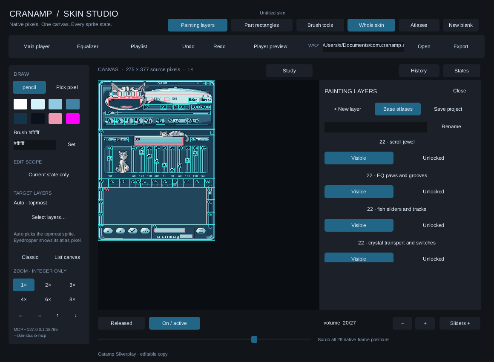

Your collection, in play.
Open local audio, build playlists, or tune into a stream by URL. Search, sort, shuffle and repeat. Import M3U, M3U8 and PLS playlists.
A LITTLE PLAYER WITH A LOT OF PERSONALITY
A music player built in Rust. Original pixel skins, your own playlists, and a whole studio to draw something new.
No account. No ads. Bring your own music.
macOS · Windows · Linux · iOS · Android · Web
LISTEN YOUR WAY
Open local audio, build playlists, or tune into a stream by URL. Search, sort, shuffle and repeat. Import M3U, M3U8 and PLS playlists.
Shape playback with a ten-band equalizer and preamp. Adjust volume and balance, then watch the spectrum analyzer or oscilloscope.
Pick an original Catamp skin or import a compatible WSZ skin you have permission to use. The player remembers your look.
MEET SKIN STUDIO
Draw directly on the skin with pixel tools, layers, masks and undo/redo. Keep a layered CStudio project, or export a WSZ skin ready to play.
Skin Studio is included on desktop, iOS, Android and web. On desktop, connect an MCP-compatible agent to draw on the same canvas.
Explore the studio guideConnected agents run separately and may use their own online services.

READY WHEN YOU ARE
Try it in your browser, or pick a build for your device.
An independent project by Dmitrii Samoilenko.
Built for music, pixels and the joy of making things.